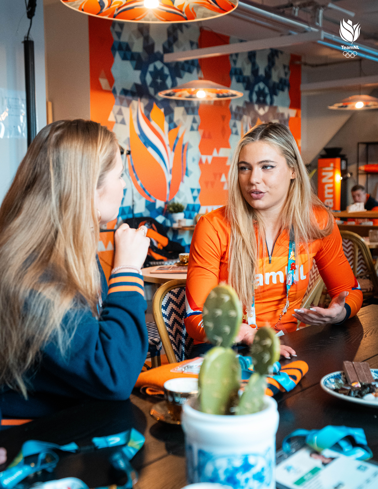
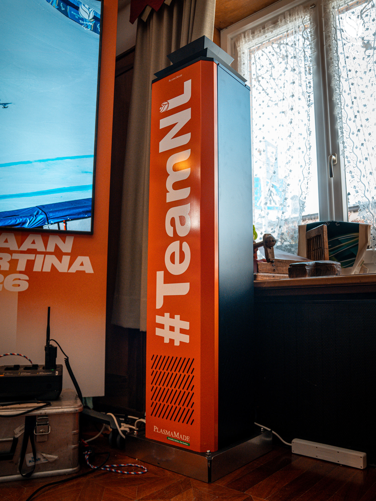
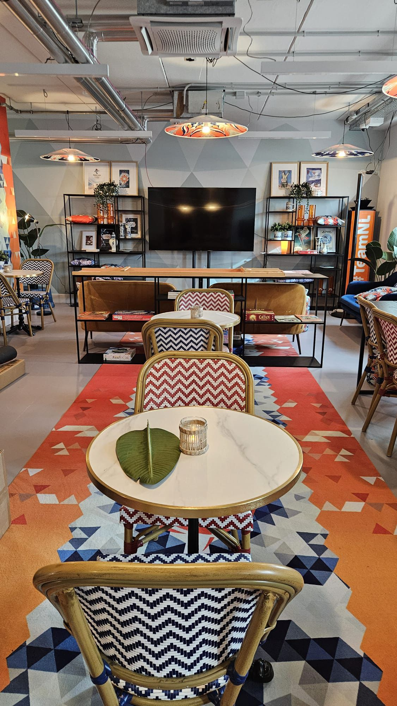
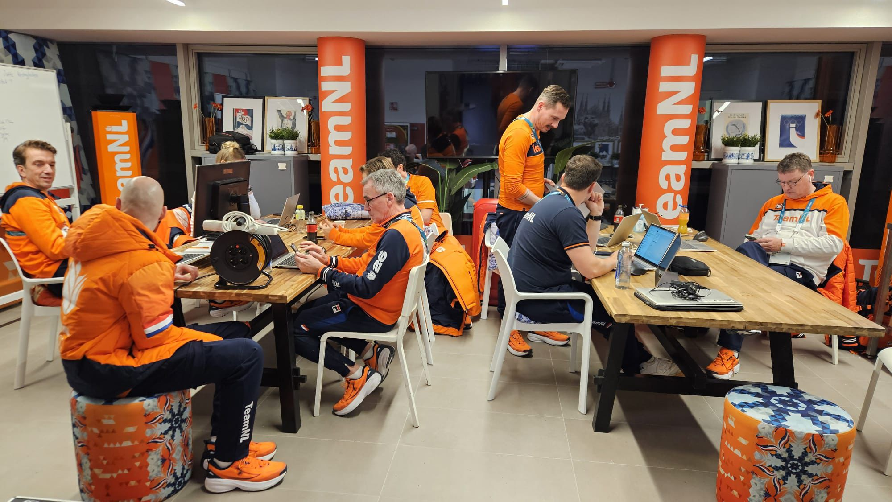
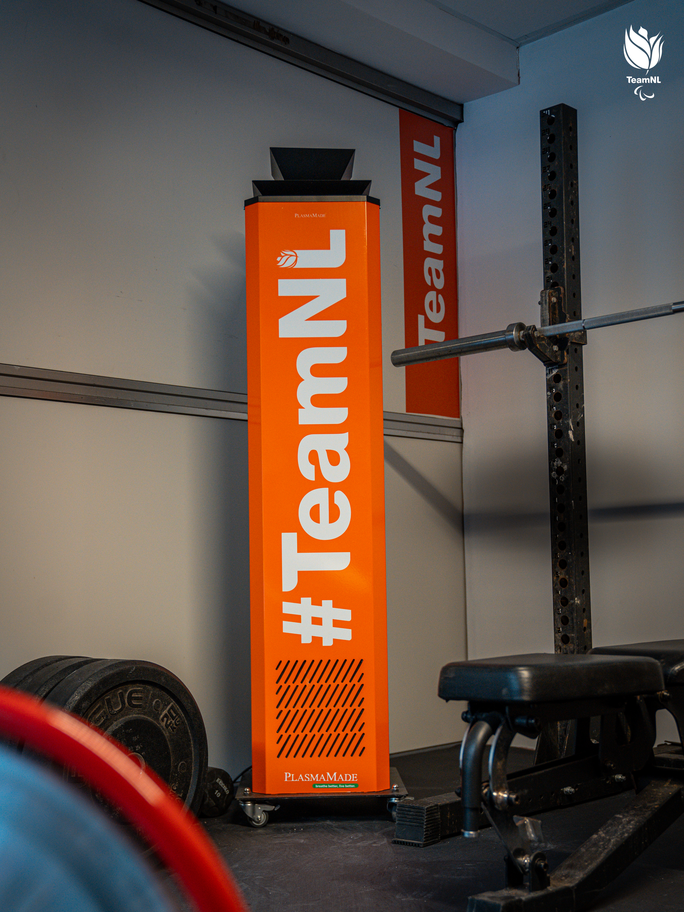
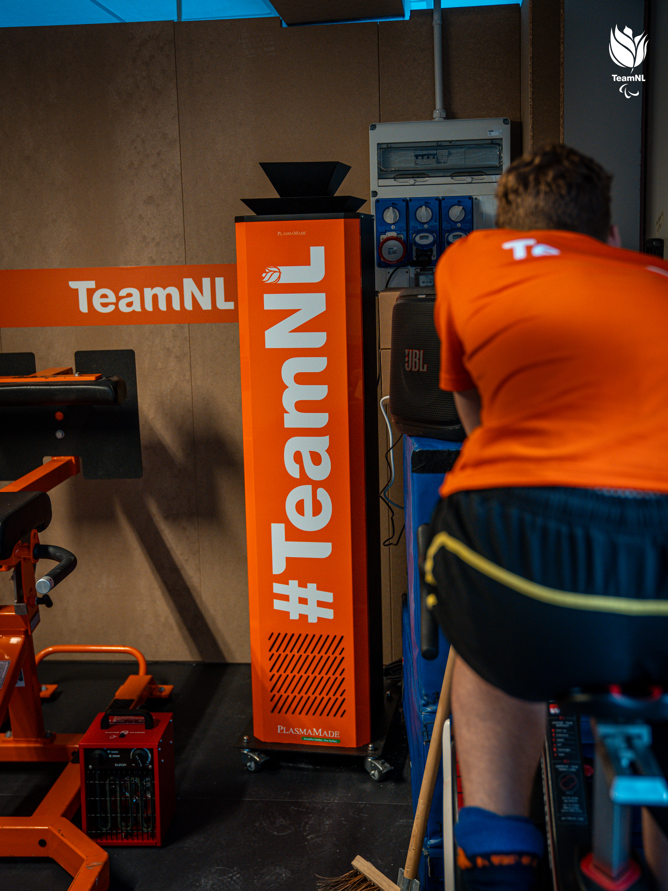
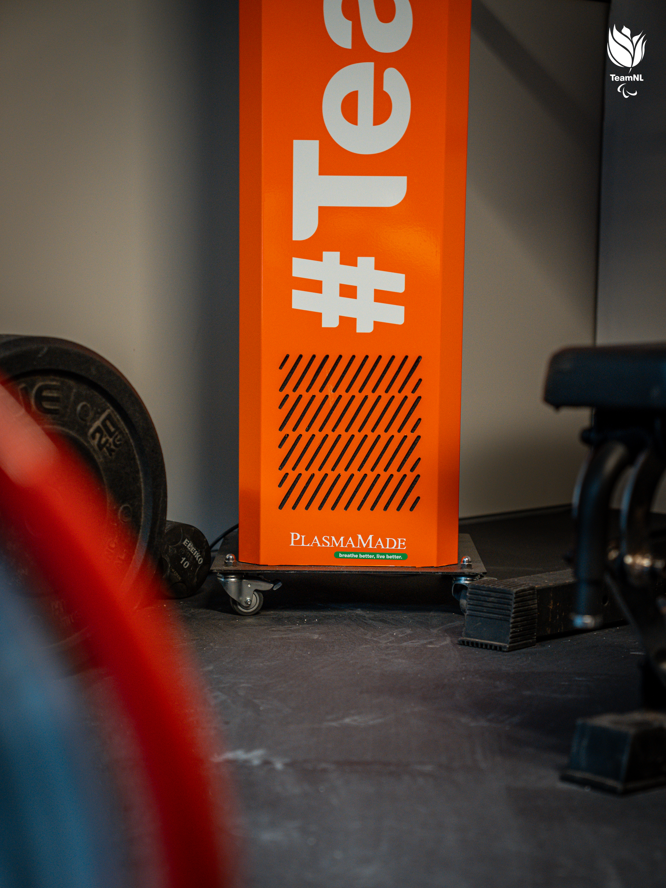

Nieuws TeamNL 27 maart 2026
Achter de schermen bij TeamNL tijdens Milano-Cortina 2026
Tijdens de Olympische Winterspelen draaiden onze PlasmaMade Air Cleaners dag en nacht in de verblijfsruimtes en slaapkamers van TeamNL. Juist buiten het zicht van de camera's ontstaat de rust waarin herstel, focus en topprestaties samenkomen.

Niet alles wat een Olympische prestatie mogelijk maakt, gebeurt op het ijs of in de arena. Juist in de uren ertussen worden ritmes bewaakt, spanning afgebouwd en lichamen weer opgeladen. Tijdens Milano-Cortina 2026 draaiden onze PlasmaMade Air Cleaners daarom dag en nacht op de plekken waar TeamNL samenkwam, tot rust kwam en zich opnieuw voorbereidde op het volgende moment.
In verblijfsruimtes en slaapkamers zorgden ze continu voor schone lucht. Geen opvallende hoofdrol, wel een stille basis waarop sporters konden herstellen, scherp blijven en hun focus vasthouden. Achter de schermen, precies daar waar comfort en concentratie het verschil helpen maken.
Dag en nacht op de achtergrond
Topsport vraagt meer dan training en talent alleen. Ook de omgeving moet kloppen. De ruimtes waarin atleten slapen, overleggen, eten en bijtanken bepalen mede hoe goed zij kunnen ontspannen en opnieuw opladen. Schone lucht is daarin geen detail, maar onderdeel van een rustige en gezonde basis.
Precies daar lag onze rol. Terwijl TeamNL zich richtte op wedstrijden, analyses en herstelmomenten, deden de Air Cleaners onzichtbaar hun werk op de achtergrond. Continu, rustig en zonder af te leiden van wat echt telt.


Een omgeving die helpt herstellen
De beelden uit het TeamNL-huis laten goed zien waar topsport ook over gaat: gesprekken aan tafel, stille werkmomenten, een lounge om even terug te schakelen en ruimtes waarin inspanning en rust elkaar afwisselen. Het zijn juist die plekken buiten beeld waar de druk zakt, concentratie terugkeert en nieuwe energie ontstaat.
Voor PlasmaMade maakt dat deze samenwerking bijzonder. Niet omdat we zelf in de schijnwerpers staan, maar omdat we mogen bijdragen aan een omgeving die goed voelt wanneer de druk het hoogst is. Schone lucht blijft onzichtbaar, maar de rol ervan in welzijn, herstel en dagelijkse prestaties is dat allerminst.

Trots op TeamNL
Milano-Cortina 2026 werd voor TeamNL een Winterspelen om trots op terug te kijken. Voor ons is het vooral bijzonder dat PlasmaMade daar achter de schermen deel van mocht uitmaken, in een rol die stil is, maar wezenlijk.
We feliciteren alle atleten, coaches en begeleiders met een indrukwekkende Olympische campagne en kijken met trots terug op een samenwerking waarin technologie, welzijn en topsport vanzelfsprekend samenkwamen.
Meer beelden uit het TeamNL-huis




Ook benieuwd naar onze Air Cleaners?
Ontdek hoe PlasmaMade kan bijdragen aan ruimtes waar rust, comfort en prestaties elke dag opnieuw samenkomen.